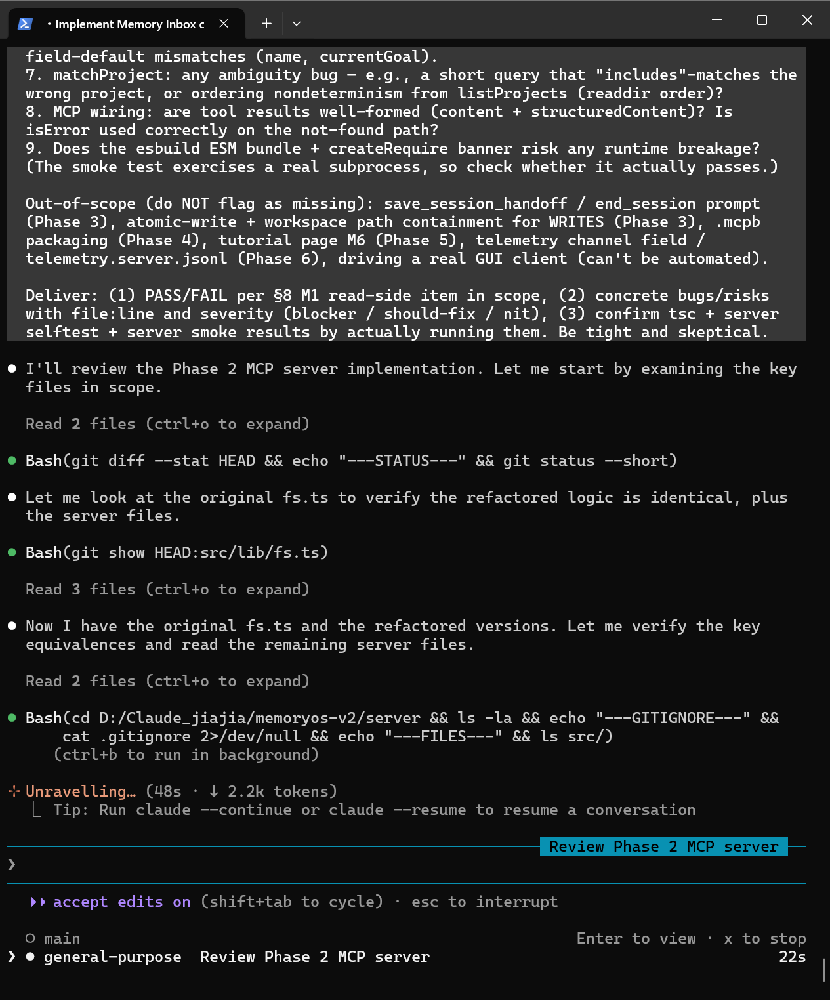
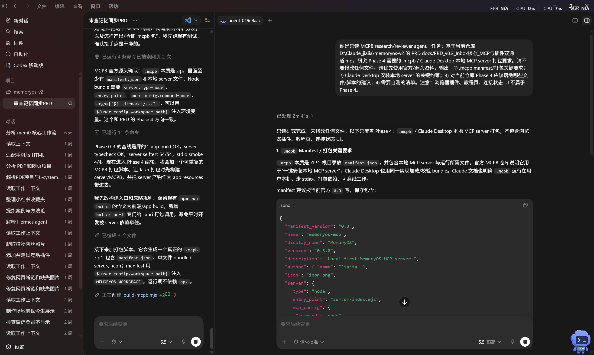

P0 onlyInbox + Review-to-save + one MCP clientInbox + Review 入库 + 一个 MCP 客户端
"Vibe coding" usually means chatting a feature into existence. I ran it as a small org: one PRD as the single source of truth, Claude Code building it phase by phase, Codex as an independent reviewer, and me owning scope, red lines and the phase gates — plus pre-empting the exact places two agents would disagree. Vibe coding时，我把AI当一个小团队来跑：一份 PRD 作唯一事实源，Claude Code 按 Phase 实现，Codex 做独立 review，我负责范围、红线和每道 Phase gate。
The artifact · verbatim原始工件 · 原文照登 Read the full PRD v0.3.1查看 PRD v0.3.1 全文 →"Let my AIs share memory across tools, without me copy-pasting.""让我的几个 AI 跨工具共享记忆，不用我复制粘贴。"
ParsedHandoff structure两条路径归一成同一个 ParsedHandoff 结构list_projects / get_project_memory, one clientlist_projects / get_project_memory，一个客户端save_session_handoff → inbox (atomic)save_session_handoff → 收件箱（原子写）.mcpb随 app 打包 / .mcpb.mcpb packaging; its corrections became the v0.3.1 patches.换一个模型交叉核对规格与 .mcpb 打包；它的修正变成了 v0.3.1 的消歧补丁。
⤢
⤢.mcpb packagingCodex（不同模型）独立交叉审查 PRD 与 .mcpb 打包All three read the same contract — the PRD. Read the full PRD → 三方读的是同一份 PRD。展开看全文 PRD →
When several agents build in parallel, things break at the seams: two agents read the same field, or the same write, two different ways — and quietly disagree. The PM job is to spot those seams ahead of time and pin them down in the spec before anyone hits them. Four of the patches that came out of that: 多个 agent 并行干活，出事的地方往往在接缝上：两个 agent 把同一个字段、同一次写入各自理解，悄悄就不一致了。我要做的是提前看到这些接缝，先把规格写死。下面是这么来的四个补丁：
sourceChannel + sourceClient, and made the often-unreliable "platform" field nullable.这条记忆到底谁写的？一份 handoff 可能来自不同通道（手动 / MCP）、不同客户端（Claude Desktop / Codex…）。挤在一个字段里就分不清——所以拆成 sourceChannel ＋ sourceClient 两个字段，那个常常填不准的"平台"字段干脆设成可空。.. and symlink escapes.一次写操作不能写坏文件、也不能逃出目录。server 写收件箱用"先写临时文件、再改名"，保证不会出现写到一半的坏文件；并校验解析后的真实路径必须留在工作区内，挡掉 .. 和软链接逃逸。_2 / _3.同一分钟存两条会互相覆盖。session 文件名精确到分钟，同分钟保存两次会盖掉前一条——冲突时自动加 _2 / _3。Memory can arrive two ways, so I made them converge before anything is stored: a manual paste is parsed from raw Markdown; an MCP call arrives as structured fields. Either way, it's normalised into the same structure in the inbox — so the Review screen never has to care where it came from. The shared floor: nothing is written to real memory until the user confirms.记忆有两种来路，所以我让它们在入库前先归一：手动粘贴从原始 Markdown 解析；MCP 调用直接收结构化字段。无论哪条，进收件箱时都归一成同一个结构——Review 界面就不用关心它从哪来。共同的底线是：用户不确认，就不写进正式记忆。
PRD §4.1Shared pure logic reused across app & server: parseHandoff / parseSessionFile / extractSuperseded / editPercent / prompt builders. The Node server re-implements file I/O on the same path & naming contract (Tauri's fs.ts can't run under Node). Server↔app talk only through workspace files (server writes inbox, app reads it) — no RPC, no port.app 与 server 共享纯逻辑：parseHandoff / parseSessionFile / extractSuperseded / editPercent / prompt builder。Node server 按同一路径/命名契约用 Node fs 重写文件读写（Tauri 的 fs.ts 不能在 Node 跑）。server↔app 只通过 workspace 文件通信（server 写 inbox，app 读）——无 RPC、不开端口。
editPercent behave identically in app & server纯逻辑自测——解析 / supersede 合并 / editPercent 在 app 与 server 行为一致.memoryos/inbox只读红线断言——server 拒绝写 .memoryos/inbox 以外的任何位置.mcpb build + Claude Desktop install verified end-to-end (enable → restart → new chat).mcpb 打包 + Claude Desktop 安装端到端跑通（启用 → 重启 → 新对话）.mcpbThe part that doesn't automate: holding the product's story — local-first, user owns the data, never bypass Review — steady while the agents do the building. 不会被自动化掉的那部分：在 agent 负责做的时候，把产品叙事稳稳守住。
{kind=link}
{kind=link}